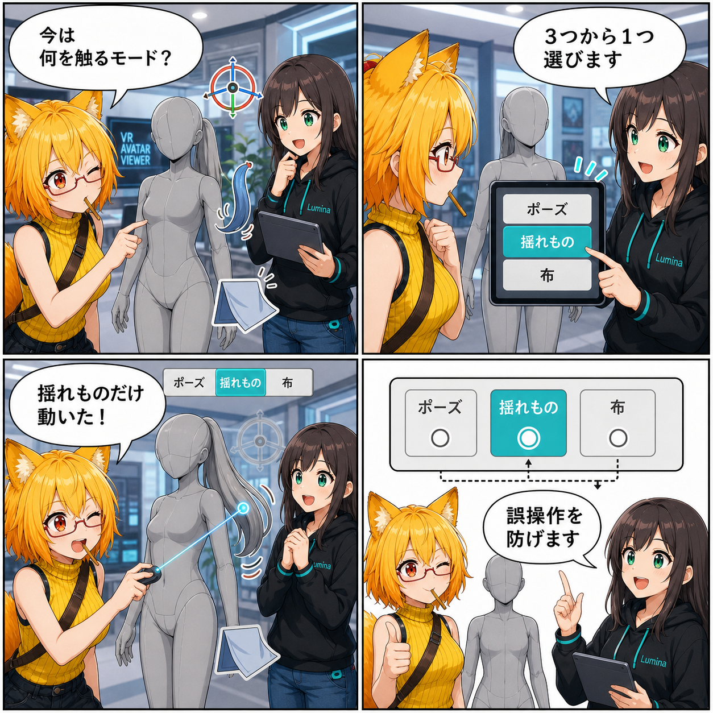

触る対象はひとつだけ。3つの編集モードをつないだ日
アバターへ直接触れる操作を「ポーズ」「揺れもの」「布」の3モードへ整理し、デスクトップとVRのUIから排他的に切り替えられるようにしました。
e7d25cb（「アバター可視Boundsとエフェクト処理を最適化」）。対象コミットは4件、集計差分は122ファイル、88,247行追加、67,124行削除でした。行数の多くはUnity Prefabのシリアライズ差分です。Viewer作業ツリーの未コミット差分は、集計期間内の実装と確認できないため実績へ含めていません。集計期間は 2026-08-17 03:00:00 JST から 2026-08-18 02:59:59 JST までです。
同じクリックやGripに、役割をひとつだけ
アバターへ直接触れる操作が増えると、同じポインターやコントローラー入力が複数の編集機能へ届きやすくなります。骨を動かしたいのか、髪などの揺れものをつかみたいのか、布を引きたいのか。対象が近いほど、意図しない機能が反応しないための整理が重要になります。
そこで今回、直接操作の共通状態として AvatarManipulationMode を追加しました。選べるのは「ポーズ」「揺れもの」「布」の3つです。選択中のモードだけが直接操作を受け持ち、対象が見つからなくても別モードの操作へ勝手にフォールバックしない構成になりました。
デスクトップとVRで同じモードを共有
デスクトップのInspectorとVRのミニUIには、3モードを切り替えるトグルが追加されました。どちらも同じ状態を参照するため、操作する場所が変わっても、現在どの編集対象を選んでいるかが分かれません。
モードを切り替えた時は、進行中のドラッグや直接操作を解除します。ポーズ以外では骨の範囲表示やIKターゲットを隠し、選択中でない編集の目印まで残さないようにしています。画面上の案内と実際に入力を受ける機能を同じ状態へそろえるのがポイントです。
デスクトップでも揺れものと布へ直接触れる
今回の変更では、デスクトップ用の物理操作インタラクターも追加されました。「揺れもの」モードではポインターの射線から対象をつかみ、「布」モードでは布パーツを選んで引っ張るプレビューへ接続します。マウスホイールによる奥行き調整も、既存のドラッグ操作と同じ入力の流れへ組み込まれています。
VR側も同じ3モードで分岐します。ポーズならBoneまたはIK、揺れものなら揺れもの操作、布なら衣服操作だけを開始します。モード変更時には左右の手が保持している直接操作を解除し、切り替え前の状態を引きずらないようにしました。
同じ期間に進んだこと
同じ集計期間には、VRコントローラー対応と非推奨APIからの移行、手モデルのPalm Pose追従と指入力の改善、アバターの可視Boundsとエフェクト処理の最適化もコミットされています。4件を合わせた差分は122ファイル、88,247行追加、67,124行削除で、行数の多くはUnity Prefabのシリアライズ差分です。
Viewerの作業ツリーには集計終了後も未コミット差分がありますが、期間内に実装された事実を確定できないため、この記事の実績には含めていません。
4コマの裏話
4コマでは、ろひが「今は何を触るモード？」と迷うところから始まります。ルミナが3つの切り替えを示し、ろひが揺れものだけをつかめたことを確認。最後は、ひとつのモードだけを有効にすることで誤操作を防ぐ仕組みを、すっきり締めてもらいます。
まとめ
ポーズ、揺れもの、布という近接した直接操作を、共通の3モードへ整理しました。デスクトップとVRで同じ選択状態を共有し、表示・入力・操作解除を連動させることで、「いま何を触っているのか」がぶれにくい編集導線になっています。
本日のひとこと： 触れる機能が増えたら、迷わない境界も育てよう。